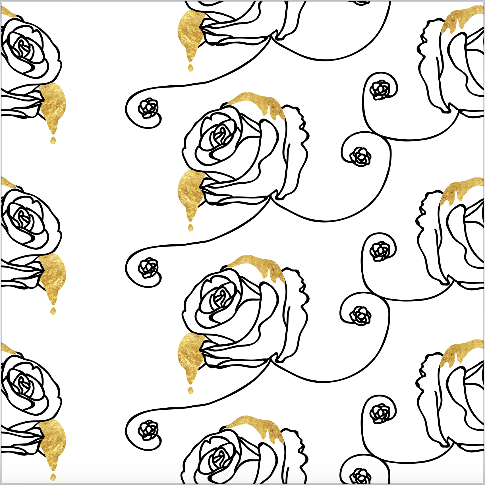
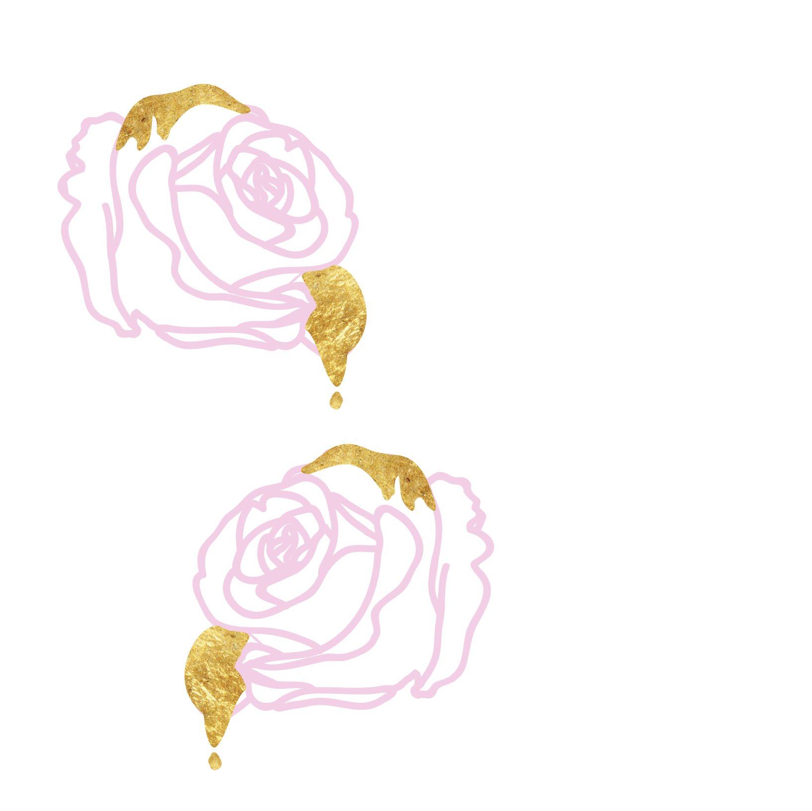
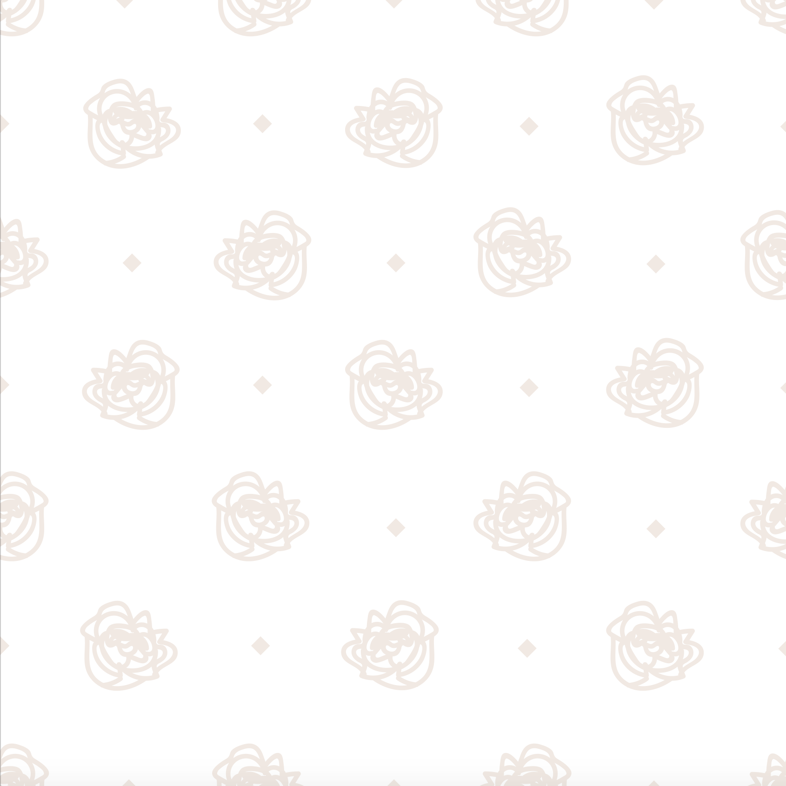
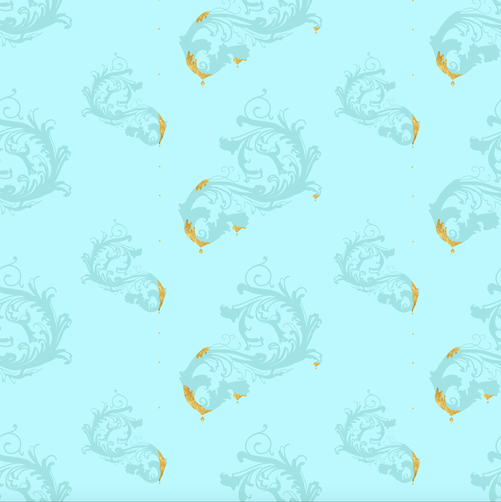

My initial goal for this wallpaper was to make something that looked expensive, but modern. I was inspired by intricate Rococo era wallpapers that were only attainable by the very rich. I enjoy the complicated floral patterns and the way some aspects of the design reacted to light differently. After this time in history beautiful wallpaper became affordable for anyone, decreasing its value and making price varied by the nature of the design irrelevant.
When I think of luxury and costly I think of gold and how some of the old wallpaper designs I took inspiration from had parts that reflect light so I used the image of gold in that way.
I decided to do digital sketches for this project because I knew exactly what I wanted my ideas to look like and I wanted to roughly render them. I incorporated flowers, different patterns, and gold.
   I chose to move forward with the blue filigree and I gradually added these other elements as I edited.
At the final printing, I decided to hand-apply gold leaf ink.
Blue Wallpaper
Red Wallpaper
Red Wallpaper Gold Detail
Red Wallpaper Gold Detail